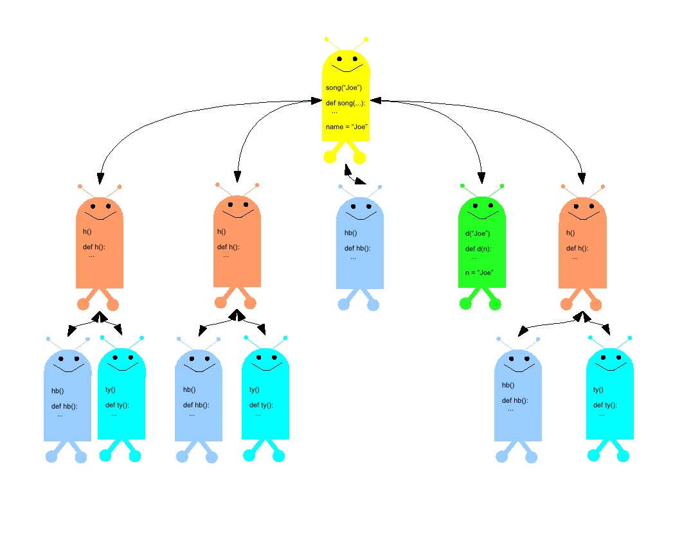

Calling and Defining Function
Comp 123
These activities will practice with using and writing functions, and will talk about how function calls work inside the computer, and a “happy robots” metaphor for understanding function calls.
Be sure to download the functionscode.py file from Moodle.
Functions we define, like the scripts we have been writing before this, are a way of describing an algorithm to the computer. A function has the benefit of doing all its work in its own “space,” which is separate from the main, global space.
Let me use a metaphor to describe the difference between scripts and functions. Suppose you have a friend who is an artist, and you ask this friend to paint a picture for you. Running a script in Python is like inviting your friend to come into your room and paint a picture for you: the result may be fine, but paint may get splashed on other things. In the same way, a script running in Python may add variables to the global namespace, and may overwrite variables that already existed there.
On the other hand, calling a function is like asking your friend to paint the picture in her studio: you tell her what kind of picture you’d like, she does the work in her own space, and returns the resulting picture to you. Whatever the artist did while painting the picture, it happened in her own space.
Read the following function.
def foo(x, y, z):
q = max(x, y)
r = max(y, z)
s = max(x, z)
return min(q, r, s)
By itself, a function definition does not do anything, any more than reading a recipe for cherry pie causes the pie to materialize on the kitchen counter. In order to execute, or invoke, this function, we need to “call” it. A function is called by listing its name and then, in parentheses, giving any input values the function needs. We’ve already seen some examples of this, with built-in Python functions like abs and move.
When we call a function we pass it inputs that it needs to do its work. Some functions just do their work and end, but many functions return actual useful values (Downey calls these “fruitful functions”). In order to use those values, either for further computations or to show them to the user, we need to assign the value to a variable, or pass it to another expression or statement. Let me use another metaphor to explain what I mean: you can think about calling and returning values with a function as being like a game of catch: you throw the input parameter values to the function when you call it, and the function throws the return value back to you. You need to catch the return value in order to use it.
Try to predict what values the function calls below would return. Then test yourself by typing the function into IDLE and trying out the examples. After running the module, click on the window containing the interactive shell, and type the following statements, one at a time. Note that I show a variety of ways to catch the value returned by the function {foo}.
val1 = foo(10, 15, 17) print val1 print foo(15, 10, 17) print foo(17, 10, 15) val2 =foo(10, 20, 10) print "The value of foo(10,20, 10) is", val2(func_01)
Try changing the function above by putting in print statements as shown below.
def foo(x, y, z):
print "Starting foo with x =", x, "y =", y, "z=", z
q = max(x, y)
print "q =", q
r = max(y, z)
print "r =", r
s = max(x, z)
print "s =", s
ans = min(q, r, s)
print print "Ending foo with value", ans
return ans
(func_02)
Now you can see what happens: when a function is called, the values that are passed as arguments are temporarily set, or “bound” to the parameter variables. Then, the function’s body is executed with those bindings in place. The {return} statement tells the function what value to send back as the value of its call. The value of a function call takes its place in any expression that uses it, much like the value of 5 * 2 takes its place in the larger expression (5 * 2) + 3.
Note
A value that is returned by an expression or a function call is different from a value that is printed by an expression or a function call. When printed, the value appears to us, the users, but is no longer available for the program to use. A value that is returned can be used in other expressions, or other function calls.
Compare these two functions and then try the calls in the Python shell.
def poly1(x):
return 3 * (x ** 2) - 1
def poly2(x):
print 3 * (x ** 2) - 1
# Which of these two expressions will work correctly? Why?
poly1(1)+ poly1(2)
poly2(1) + poly2(2)
(func_03)
Practice defining functions with the following examples. The first one is plain Python, after that get a Scribbler and try the rest. Put your definitions in the functionscode.py file.
Define a function called printName that takes a single input, a string. It should print a welcome message that says Welcome to Comp 123, and then the name See the example below:
>>> printName("Froggie")
Welcome to Comp 123, Froggie
>>> printName("Elsa")
Welcome to Comp 123, Elsa
Define a repeatString function that takes a string as input, and an integer, n. It should return a new string that is a copy of the input string, copied n times.
Once you have defined the function, it should behave as in the following example:
>>> repeatString('hank', 3)
'hankhankhank'
>>> repeatString(' ',10)
' '
>>> repeatString("A man, a plan, a canal - Panama!", 0)
''
Define a function called ave3 that takes three numbers as inputs: x,``y``,``z``. It should compute the average of the three by adding them up and dividing by 3.0. It should return the resulting value.
>>> ave3(2, 3.0, 4.0)
3.0
Challenge functions for those who get done quickly
Define a function that takes two strings as its inputs. It should return the total length of the two strings. The built-in {len} function will report the length of a string: len("abc") = 3.
Suppose a country’s tax code calls for a flat income tax rate of 12% on the first $50,000 of income. Any income over $50,000 has a tax rate of 20%. Thus, if I make $75,000 in income in a year, then my income tax will be \(50,000 * 0.12 + 25,000 * 0.2\), or $11,000. Define a function {incomeTax} that takes two numbers as inputs. The first number is the person’s income up to $50,000. The second input number is the part of the person’s income that exceeds $50,000. The function should return the income tax owed (based on the formula above). See the examples below:
>>> incomeTax(50000, 25000)
11000.0
>>> incomeTax(42000, 0)
5040.0
>>> incomeTax(50000, 130000)
32000.0
>>> incomeTax(12000, 0)
1440.0
>>>
Calling a single function and having it return is often pretty easy to understand. But what if one function calls a second, which calls a third, and so on. Take a look at the set of functions in functionscode.py `` that start with the ``song function. Without running the program, try to predict what the output would be. Then run it, to see how you did!
How does the computer keep track of which function has called which other one? Downey talks about “stack frames,” which are the tool used by the computer to keep track of function calls. Each time a function is called, the computer allocates a “stack frame” that contains information about both the called function, and the place in the calling program where control and the function’s value should return once the function call is over.
I like to use a metaphor instead of the details of stack frames; I call it the Happy Robots metaphor. This is how it works:
When a function is defined, its definition is stored away in the in Python’s global namespace, which is a table where functions and other values can be looked up by name. Now, suppose that someone asks Python to evaluate a function call. Imagine that somewhere in the computer is a collection of happy robots, just waiting for a chance to execute some code. When the function call happens, one of the robots is selected and assigned that call.
The robot always does four things:
Information passes two directions: to the called function by way of its parameters, and from the called function by way of its returned value (the game of catch, remember?). The computer keeps track of the happy robots that represent functions that have been called, but have not yet returned.
The picture below shows the set of happy robots that would be created for the program in song.py. Generally, happy robots on the same row would be called in sequence, left to right.
If there is time, we will work through how this example works together in class.